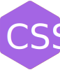

MugiSus's Site
About me
某高専 情報工学科在籍中の2003年生まれの3年生です。
ハンドルネームはMugiSusで これは むぎすす と発音します。
麦煤 と書くことがあります。
言語は主に javascript(HTML+CSS) C# C Python 等を使用しています。
ちなみにエディタはVSCodeです。Vimではありません。Vimではありません
フロントエンドを得意としています。
Unityでゲームを作ったりJavaScirptでこういうページや↑のようなアニメーションを作ったりしています。
デザインや絵はすこしだけできます。
Products
ここでは自分の作品のうち一部を紹介します。
Logic-Circuit-Simulator-V2
新しくなった論理回路シミュレータ(グラフィック強化のため、めちゃくちゃ重い) 性能はたぶん前作を上回っている

Logic-Circuit-Simulator
論理回路シミュレータ
Morser
モールス信号をキーボードで高速で打ち込むのをやってみたかったやつ(D,F,J,K)
ビジュアルプログラミング言語「Scratch」アカウント：MMGISS(11~15歳の間活動)
Links